legibility auditor · 2026-07-30 · Step 0 of docs/plans/town-legibility.md · method in legibility-audit-design.md
The question every shot is graded against is the user's: would a player who has never seen this scene know, from the image alone, where the entries and exits are and what route to take?
Nothing here is judged by eye alone. Each entry, exit and every metre of
every route was measured in the running game by GL readback: a marker is drawn at the
point with the depth test on, the frame is rendered, and the surviving pixels are counted
against the shot's own baked depth map. 0% visible means the backdrop hides it — not
that it looked hard to see. Two heights are reported because they are two questions:
surface visibility (can a player see the path itself, before walking it) and
figure visibility (can they at least follow their own character along it). The route
polylines are derived from the town map's typed walk edges and the camera file's ownership,
so they are the town's own statement of intent, not a guess
(public/townmap/dellhollow.routes.json, tools/routes_derive.mjs).
One amendment to the rubric, made in the doing and flagged for the coordinator: fall-off is scored separately from the verdict. Almost every ribbon in this canyon town has an unguarded edge within 2 m — 91 places over 17 shots — so folding it into GREEN/AMBER/RED flattened the verdict and hid the legibility signal. The verdict is discoverability (entry-visible, exit-visible, exit-flow, route-visible, route-distinct); fall-off is its own ranked column and its own bucket-1 queue.
| shot | verdict | in/out | worst spine surface |
worst spine figure | worst hidden run | exits <25% vis |
exits off-frame | fall-off places | defects | buckets |
|---|---|---|---|---|---|---|---|---|---|---|
| gate | RED | 3/2 | 42.9% | 75% | 7.62 m | 1 | 0 | 2 | exit-ambiguous, exit-invisible, fall-off-risk, route-reads-as-scenery | 4 2 1 |
| shelf-west | RED | 5/5 | 33.3% | 33.3% | 2.97 m | 2 | 0 | 5 | clutter, exit-invisible, fall-off-risk, route-reads-as-scenery | 4 1 2 |
| shelf-east | RED | 3/3 | 0% | 100% | 5.02 m | 1 | 0 | 0 | camera-fights-route, entry-invisible, exit-ambiguous | 3 4 2 |
| loop-stairs | RED | 3/3 | 0% | 0% | 5.02 m | 1 | 0 | 6 | clutter, fall-off-risk, route-reads-as-scenery | 3 1 2 |
| quay-west | AMBER | 5/5 | 55.6% | 66.7% | 3.41 m | 1 | 0 | 3 | clutter, exit-ambiguous, fall-off-risk | 2 1 3 |
| quay-east | GREEN | 3/3 | 100% | 100% | 0 m | 0 | 0 | 2 | 2 | |
| lockhead | AMBER | 2/2 | 33.3% | 66.7% | 1.76 m | 0 | 1 | 11 | exit-offscreen, fall-off-risk, route-reads-as-scenery | 3 1 2 |
| cottage | AMBER | 4/4 | 66.7% | 66.7% | 1.83 m | 1 | 1 | 12 | clutter, exit-offscreen, fall-off-risk | 1 3 2 |
| crossing | RED | 2/2 | 0% | 100% | 10.45 m | 0 | 0 | 0 | clutter, exit-ambiguous, route-reads-as-scenery | 4 3 2 |
| weave | AMBER | 3/3 | 50% | 100% | 2.74 m | 0 | 0 | 19 | clutter, exit-ambiguous, fall-off-risk | 1 3 2 |
| deep-stairs | GREEN | 2/2 | 90.9% | 100% | 1.43 m | 0 | 0 | 4 | fall-off-risk | 1 2 |
| boatyard | RED | 1/1 | 0% | 0% | 8.6 m | 0 | 1 | 0 | camera-fights-route, exit-offscreen, route-reads-as-scenery | 3 4 2 |
| waterfront | RED | 4/4 | 57.1% | 71.4% | 7.39 m | 2 | 2 | 3 | exit-ambiguous, exit-offscreen, route-reads-as-scenery | 3 4 2 |
| fishdock | AMBER | 3/3 | 57.1% | 100% | 4.36 m | 0 | 0 | 10 | exit-ambiguous, fall-off-risk, route-reads-as-scenery | 1 2 3 |
| cottage-steps | RED | 2/2 | 100% | 100% | 0 m | 0 | 0 | 2 | entry-invisible, fall-off-risk, route-reads-as-scenery | 4 1 2 |
| lockfive | RED | 4/4 | 44.4% | 11.1% | 4.23 m | 2 | 0 | 5 | clutter, exit-invisible, route-reads-as-scenery | 4 3 2 |
| north-landing | GREEN | 1/1 | 100% | 100% | 0 m | 0 | 0 | 7 | clutter, fall-off-risk | 1 2 |
cottage-steps is disconnected floating slabs — there is no stair in the frame,
only walkmesh. Rebuild along the existing ribbon
keepers-cottage__lock-five t=0.239..0.500: (94.5, 5.20, -24.5) → (92.5, 3.20,
-25.8) → (89.5, 1.40, -26.2), treads + stringers + a landing at each z-kink. Same pass
should take the two off-frame descent exits at cottage and lockfive.gate, and both onward seams measure 0% in shelf-west. Thin
or raise the veg_ mass over x=[16,41], z=[-9,-2] at h=24/19, and give the gate
stair head a lit threshold.probe/weave.json and probe/lockhead.json.The audit found one systemic cause of off-frame exits:
tools/cine_solve.mjs frames each shot around its owned region plus every
arrival that lands in it — but not the seam centres it is an exit of. Every
arrival is in frame (the solver guarantees it) while five exits are not. Proposed:
add the at of every cut whose camFrom is this shot to the solver's
sample set. That fixes all five by construction and protects every future town. It re-solves
all cameras and needs a full re-bake, so it is the coordinator's call. Per-shot hand
alternatives (aim height, metres, map coords) are in each card: lockhead −0.99,
cottage −3.36, boatyard −1.93, waterfront −2.39.
What the shot is for (cameras.json): Arrival. Standing inside the town on the rim road, looking back upstream at the arch: the gatehouse toll window left, the porters' yard beyond it, the cargo winch head on the right shoulder, and the drop into the gorge past the rail. The road runs away from camera so the arch reads as a threshold you came through.
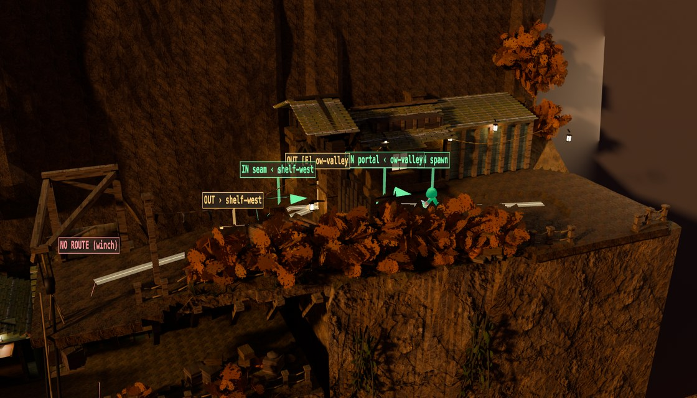
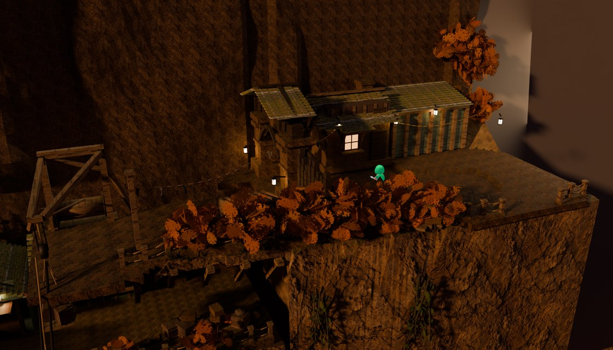
seam:valley-gate__inn → shelf-west (silent cut) · visible 0% · ndc (-0.32,-0.25) · edge margin +0.68portal:valley-gate → ow-valley [E] · visible 50% · ndc (-0.09,-0.05) · edge margin +0.91seam:valley-gate__inn ← shelf-west · visible 72%portal:dellhollow-valley-gate ← ow-valley · visible 88%spawn:gate ← bundle spawn · visible 100%| route | role | class | len | surface vis | figure vis | worst hidden |
|---|---|---|---|---|---|---|
valley-gate__gatehouse | spine | road | 5.702 m | 50% | 75% | 3.8 m |
valley-gate__winch-head | link | road | 11.424 m | 71.4% | 100% | 3.81 m |
valley-gate__inn@0..0.428 | spine | stairs | 4.51 m | 75% | 100% | 1.5 m |
valley-gate__porters-yard | link | road | 11.433 m | 42.9% | 85.7% | 7.62 m |
framing {"yaw": 68, "pitch": 22, "margin": 0.07} · visibleFrac 0.7812 · route in frame 100% · raw record probe/gate.json
What the shot is for (cameras.json): Down the shop street eastward, with the gate stair folded in: the S-bend flight comes down off the rim into the top of frame, the Boatmen's Rest sits front-left with its sign, the chandlery and weapon shop recede east, everyday lanterns strung overhead and gorge air past the rail on the right. You see the whole arrival into the town's living street in one shot.
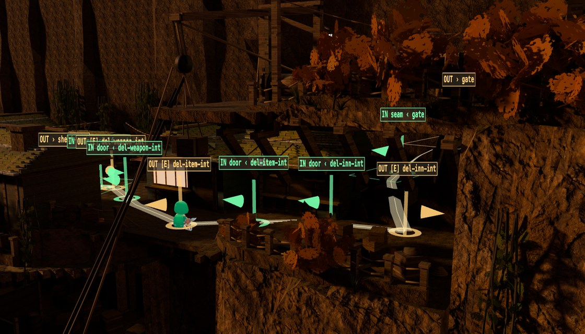
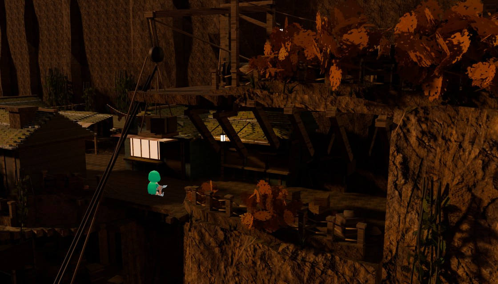
door:inn → del-inn-int [E] · visible 100% · ndc (+0.38,-0.41) · edge margin +0.59door:item-shop → del-item-int [E] · visible 100% · ndc (-0.38,-0.37) · edge margin +0.62door:weapon-shop → del-weapon-int [E] · visible 100% · ndc (-0.61,-0.14) · edge margin +0.39seam:valley-gate__inn → gate (silent cut) · visible 0% · ndc (+0.56,+0.13) · edge margin +0.44seam:weapon-shop__armor-shop → shelf-east (silent cut) · visible 0% · ndc (-0.77,-0.14) · edge margin +0.23seam:valley-gate__inn ← gate · visible 11%seam:weapon-shop__armor-shop ← shelf-east · visible 64%door:inn ← del-inn-int · visible 100%door:item-shop ← del-item-int · visible 100%door:weapon-shop ← del-weapon-int · visible 98%| route | role | class | len | surface vis | figure vis | worst hidden |
|---|---|---|---|---|---|---|
valley-gate__inn@0.428..1 | spine | stairs | 6.591 m | 66.7% | 50% | 2.64 m |
inn__item-shop | spine | road | 8.905 m | 71.4% | 100% | 2.97 m |
item-shop__weapon-shop | spine | road | 8.589 m | 100% | 100% | 0 m |
weapon-shop__armor-shop@0..0.372 | spine | road | 2.802 m | 33.3% | 33.3% | 2.8 m |
framing {"yaw": 120, "pitch": 10, "margin": 0.1} · visibleFrac 0.6875 · route in frame 100% · raw record probe/shelf-west.json
What the shot is for (cameras.json): Looking back westward up the street: the armour shop cantilevered out over the void on the left, the shop row receding toward the inn, the shelf homes closing the frame at the far end where the street turns down into the market.
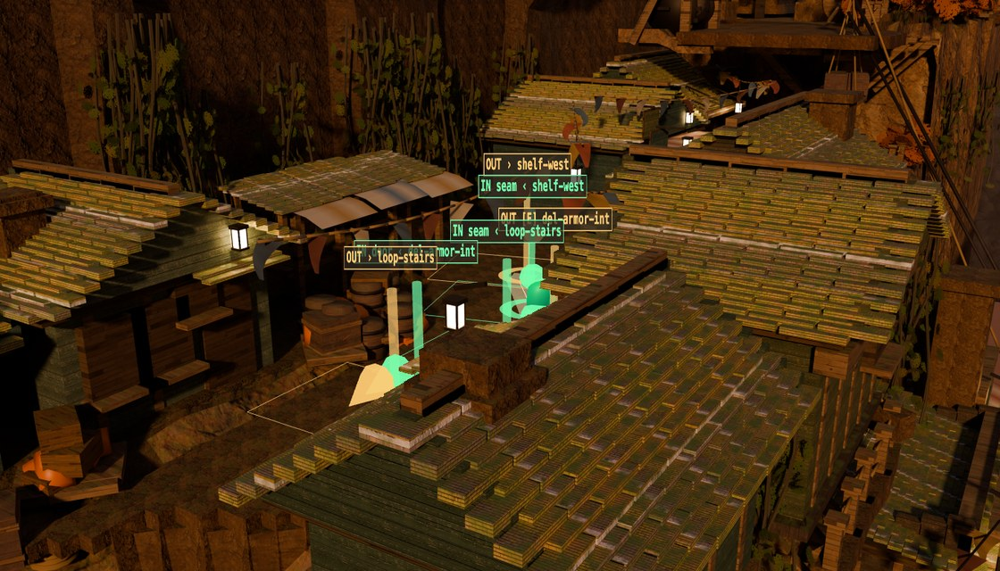
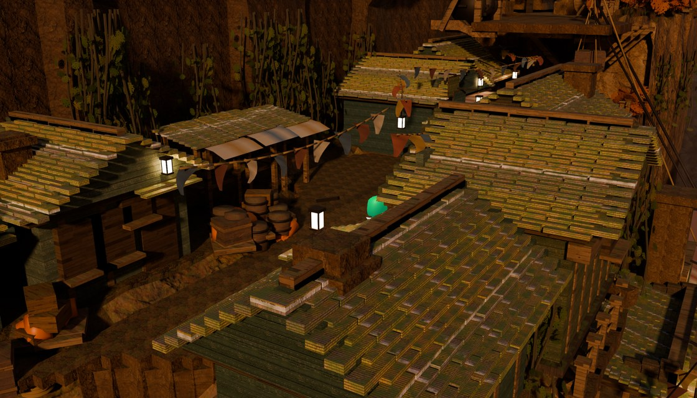
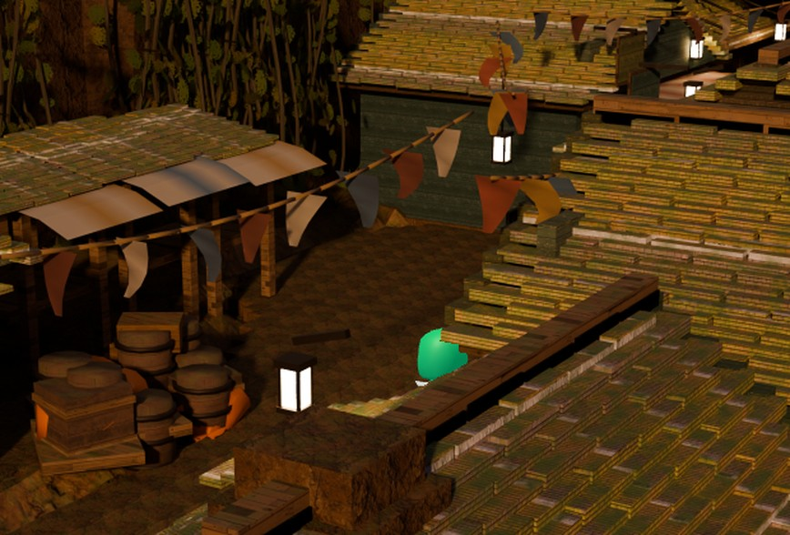
door:armor-shop → del-armor-int [E] · visible 2% · ndc (+0.10,-0.28) · edge margin +0.71seam:weapon-shop__armor-shop → shelf-west (silent cut) · visible 100% · ndc (+0.05,-0.01) · edge margin +0.95seam:armor-shop__shelf-homes → loop-stairs (silent cut) · visible 83% · ndc (-0.21,-0.50) · edge margin +0.50seam:weapon-shop__armor-shop ← shelf-west · visible 97%seam:armor-shop__shelf-homes ← loop-stairs · visible 7%door:armor-shop ← del-armor-int · visible 26%| route | role | class | len | surface vis | figure vis | worst hidden |
|---|---|---|---|---|---|---|
weapon-shop__armor-shop@0.372..1 | spine | road | 4.732 m | 60% | 100% | 2.37 m |
armor-shop__shelf-homes@0..0.5 | spine | road | 3.347 m | 0% | 100% | 5.02 m |
framing {"yaw": 32, "pitch": 18, "margin": 0.1} · visibleFrac 0.6094 · route in frame 100% · raw record probe/shelf-east.json
What the shot is for (cameras.json): The double descent: the shelf homes' little yard at the top of frame and TWO flights leaving it, turning down five metres onto the quay — one to the harbour deck, one straight into the market. Shot from out over the gorge so the whole tier stack reads at once: shelf lanterns above, stall canvas below, gorge air between them.
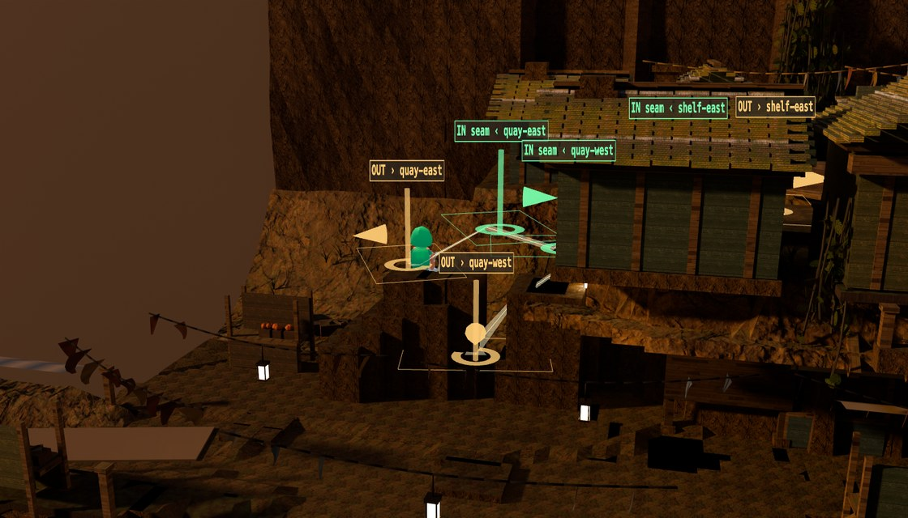
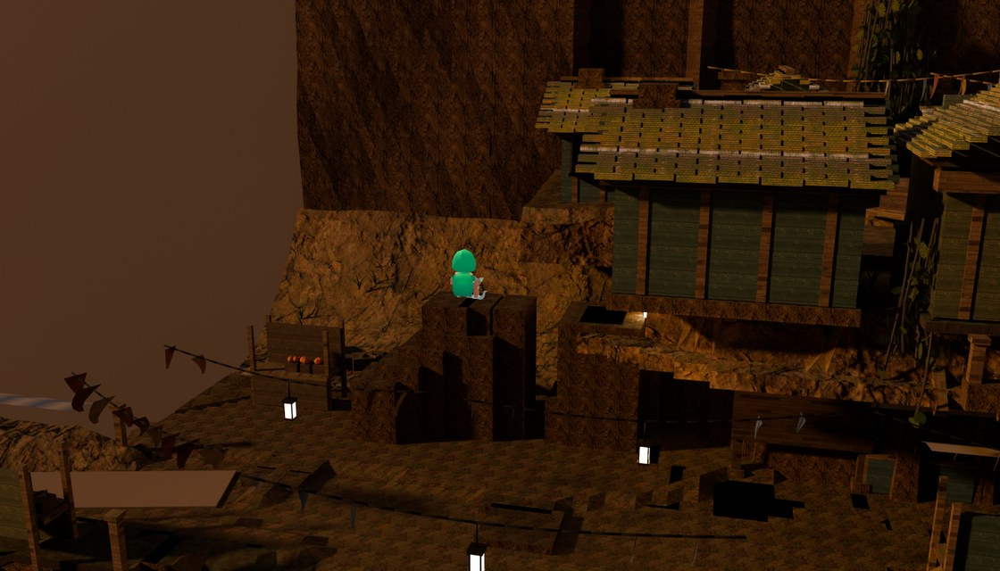
seam:armor-shop__shelf-homes → shelf-east (silent cut) · visible 0% · ndc (+0.68,+0.17) · edge margin +0.32seam:shelf-homes__quay-deck → quay-west (silent cut) · visible 100% · ndc (+0.05,-0.42) · edge margin +0.58seam:shelf-homes__market-stalls → quay-east (silent cut) · visible 100% · ndc (-0.10,-0.07) · edge margin +0.90seam:armor-shop__shelf-homes ← shelf-east · visible 0%seam:shelf-homes__quay-deck ← quay-west · visible 0%seam:shelf-homes__market-stalls ← quay-east · visible 100%| route | role | class | len | surface vis | figure vis | worst hidden |
|---|---|---|---|---|---|---|
armor-shop__shelf-homes@0.5..1 | spine | road | 3.347 m | 0% | 0% | 5.02 m |
shelf-homes__quay-deck@0..0.5 | spine | stairs | 5.848 m | 50% | 66.7% | 2.34 m |
shelf-homes__market-stalls@0..0.5 | spine | stairs | 5.762 m | 80% | 80% | 1.44 m |
framing {"yaw": 104, "pitch": 15, "margin": 0.11} · visibleFrac 0.6562 · route in frame 100% · raw record probe/loop-stairs.json
What the shot is for (cameras.json): The heart of the town, from over the gorge at deck level: the cookhouse glow on the left, the notice board mid-deck, the open crowd space of the harbour deck, and the deep stairs' shadowed corner far left. The Shelf's lights stack up the wall behind.
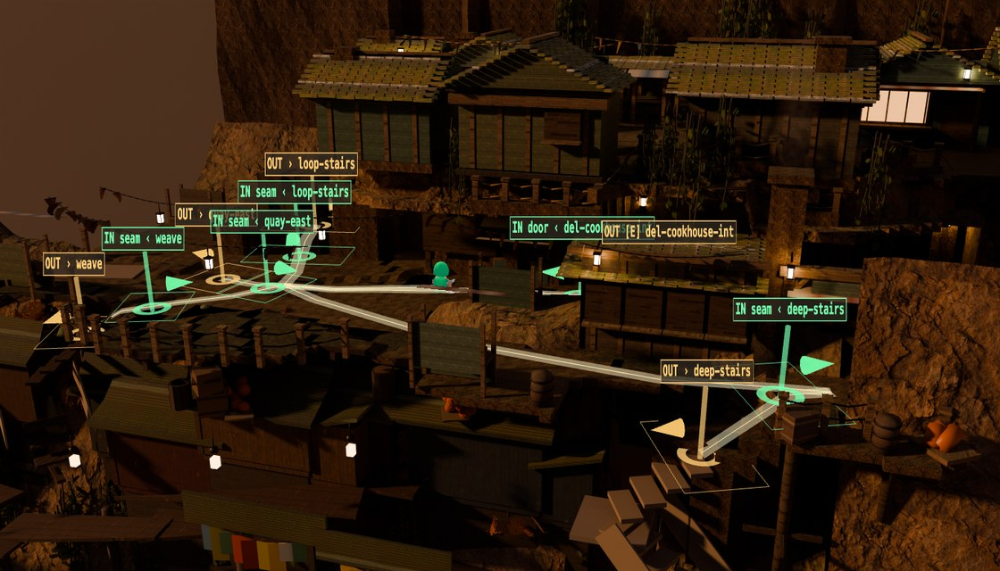
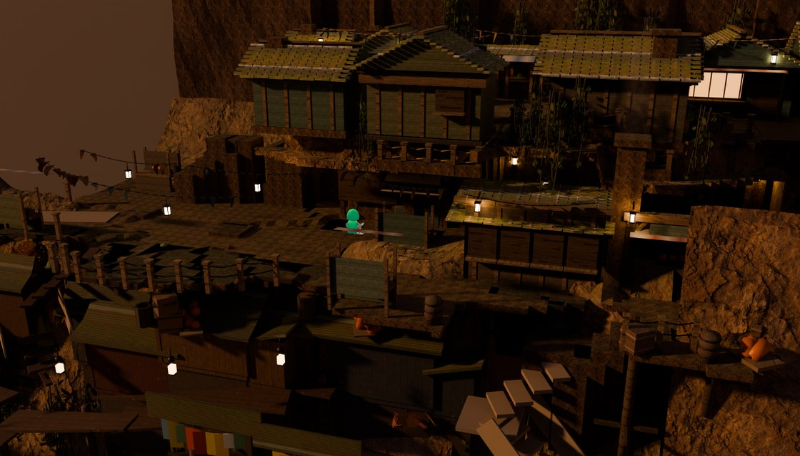
door:cookhouse → del-cookhouse-int [E] · visible 0% · ndc (+0.33,-0.07) · edge margin +0.67seam:shelf-homes__quay-deck → loop-stairs (silent cut) · visible 100% · ndc (-0.37,+0.18) · edge margin +0.63seam:quay-deck__market-stalls → quay-east (silent cut) · visible 100% · ndc (-0.55,+0.00) · edge margin +0.45seam:quay-deck__pilot-cluster → weave (silent cut) · visible 29% · ndc (-0.83,-0.20) · edge margin +0.17seam:deep-stairs-head__deep-stairs-foot → deep-stairs (silent cut) · visible 100% · ndc (+0.40,-0.62) · edge margin +0.38seam:shelf-homes__quay-deck ← loop-stairs · visible 100%seam:quay-deck__market-stalls ← quay-east · visible 100%seam:quay-deck__pilot-cluster ← weave · visible 100%seam:deep-stairs-head__deep-stairs-foot ← deep-stairs · visible 100%door:cookhouse ← del-cookhouse-int · visible 1%| route | role | class | len | surface vis | figure vis | worst hidden |
|---|---|---|---|---|---|---|
shelf-homes__quay-deck@0.5..1 | spine | stairs | 4.426 m | 100% | 100% | 0 m |
quay-deck__cookhouse | spine | deck | 13.377 m | 55.6% | 66.7% | 3.34 m |
quay-deck__notice-board | link | deck | 5.571 m | 100% | 100% | 0 m |
quay-deck__market-stalls@0..0.485 | spine | deck | 2.803 m | 100% | 100% | 0 m |
quay-deck__deep-stairs-head | spine | deck | 18.781 m | 83.3% | 100% | 3.41 m |
quay-deck__pilot-cluster@0..0.483 | spine | stairs | 6.938 m | 80% | 100% | 1.73 m |
deep-stairs-head__deep-stairs-foot@0..0.146 | spine | stairs | 4.031 m | 100% | 100% | 0 m |
framing {"yaw": 107, "pitch": 19, "margin": 0.06} · visibleFrac 0.6562 · route in frame 100% · raw record probe/quay-west.json
What the shot is for (cameras.json): The stalls, close: canvas and crates filling frame, the deck opening west behind them, the long lock-head deck leaving east. Tighter than the harbour shot on purpose — this is where a player stops to buy.
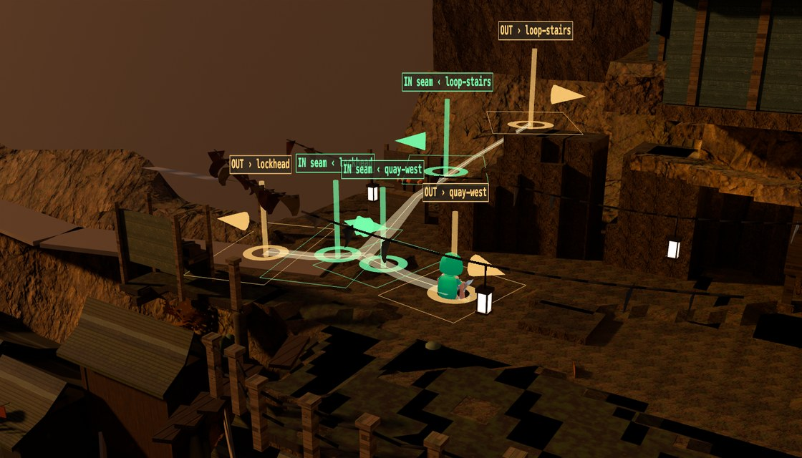
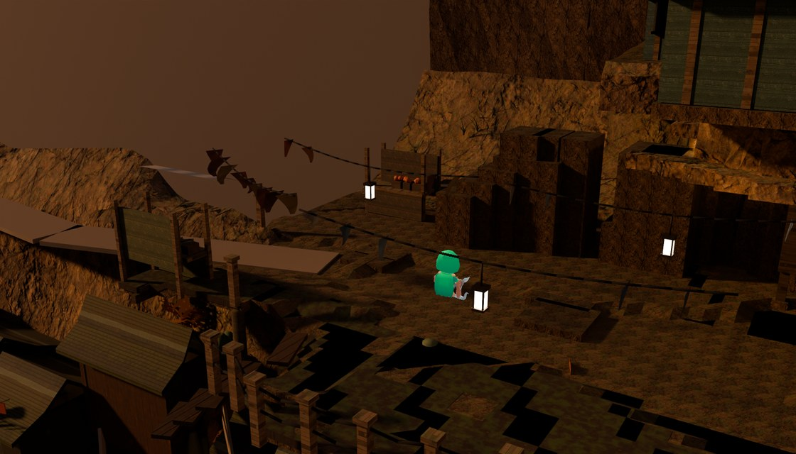
seam:quay-deck__market-stalls → quay-west (silent cut) · visible 88% · ndc (+0.13,-0.32) · edge margin +0.68seam:market-stalls__lockhead → lockhead (silent cut) · visible 100% · ndc (-0.34,-0.14) · edge margin +0.66seam:shelf-homes__market-stalls → loop-stairs (silent cut) · visible 100% · ndc (+0.32,+0.41) · edge margin +0.59seam:quay-deck__market-stalls ← quay-west · visible 75%seam:market-stalls__lockhead ← lockhead · visible 81%seam:shelf-homes__market-stalls ← loop-stairs · visible 100%| route | role | class | len | surface vis | figure vis | worst hidden |
|---|---|---|---|---|---|---|
quay-deck__market-stalls@0.485..1 | spine | deck | 2.974 m | 100% | 100% | 0 m |
market-stalls__lockhead@0..0.126 | spine | deck | 2.787 m | 100% | 100% | 0 m |
shelf-homes__market-stalls@0.5..1 | spine | stairs | 6.316 m | 100% | 100% | 0 m |
framing {"yaw": 122, "pitch": 18, "margin": 0.1, "minDist": 18} · visibleFrac 0.85 · route in frame 100% · raw record probe/quay-east.json
What the shot is for (cameras.json): The overlook, from high out over the basin: the harbourmistress's post at the deck's end, the long plank approach running away toward it, the maintenance ladder plunging off the edge, and Lock Five with the dam small and thunderous far below.
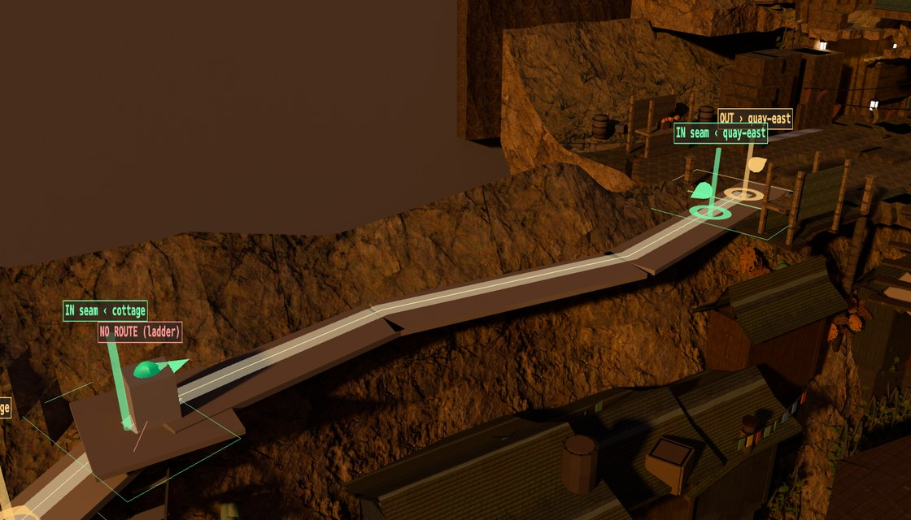
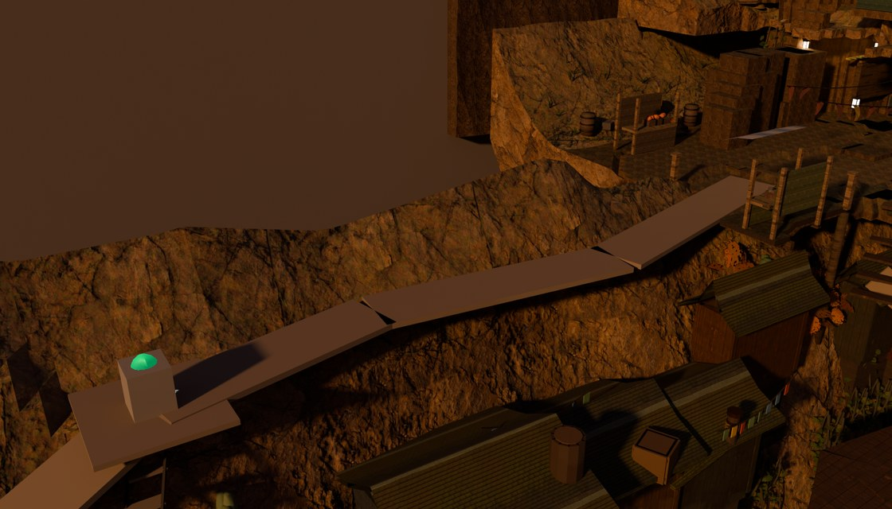
seam:market-stalls__lockhead → quay-east (silent cut) · visible 100% · ndc (+0.63,+0.23) · edge margin +0.37seam:lockhead__keepers-cottage → cottage (silent cut) · visible 100% · ndc (-0.97,-1.06) · edge margin -0.06 · GROUND OFF-FRAMEseam:market-stalls__lockhead ← quay-east · visible 100%seam:lockhead__keepers-cottage ← cottage · visible 83%| route | role | class | len | surface vis | figure vis | worst hidden |
|---|---|---|---|---|---|---|
market-stalls__lockhead@0.126..1 | spine | deck | 19.351 m | 91.7% | 100% | 1.76 m |
lockhead__keepers-cottage@0..0.205 | spine | path | 2.981 m | 33.3% | 66.7% | 1.49 m |
framing {"yaw": 58, "pitch": 24, "margin": 0.1} · visibleFrac 0.975 · route in frame 100% · raw record probe/lockhead.json
What the shot is for (cameras.json): Intimate, from out over the basin: the keepers' cottage set against the cliff with its balcony over the drop, warm windows, and the path from the Lockhead climbing into frame from the left.
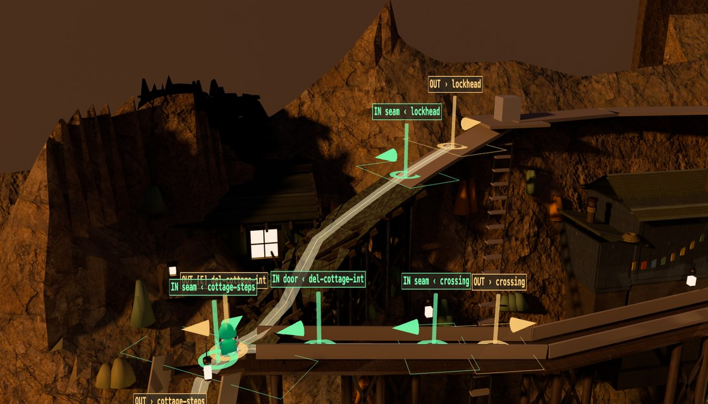
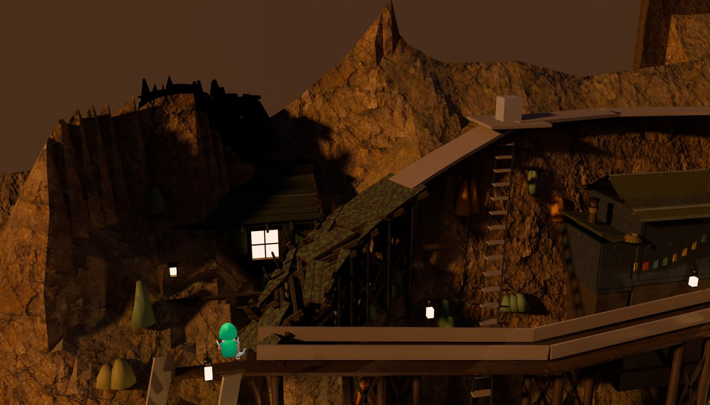
door:keepers-cottage → del-cottage-int [E] · visible 100% · ndc (-0.35,-0.76) · edge margin +0.24seam:lockhead__keepers-cottage → lockhead (silent cut) · visible 100% · ndc (+0.28,+0.26) · edge margin +0.72seam:keepers-cottage__lock-five → cottage-steps (silent cut) · visible 0% · ndc (-0.50,-1.36) · edge margin -0.36 · GROUND OFF-FRAMEseam:weave-huts__keepers-cottage → crossing (silent cut) · visible 100% · ndc (+0.40,-0.76) · edge margin +0.24seam:lockhead__keepers-cottage ← lockhead · visible 100%seam:keepers-cottage__lock-five ← cottage-steps · visible 100%seam:weave-huts__keepers-cottage ← crossing · visible 100%door:keepers-cottage ← del-cottage-int · visible 100%| route | role | class | len | surface vis | figure vis | worst hidden |
|---|---|---|---|---|---|---|
lockhead__keepers-cottage@0.205..1 | spine | path | 12.055 m | 100% | 100% | 0 m |
keepers-cottage__lock-five@0..0.239 | spine | stairs | 3.654 m | 66.7% | 66.7% | 1.83 m |
weave-huts__keepers-cottage@0.591..1 | spine | bridge | 8.818 m | 100% | 100% | 0 m |
framing {"yaw": 78, "pitch": 17, "margin": 0.11} · visibleFrac 0.9844 · route in frame 94.7% · raw record probe/cottage.json
What the shot is for (cameras.json): The postcard: side-on to the span, the plank bridge sagging across frame with the basin far below, bunting snapping in the gorge wind, cottage lights waiting at the far end. TRANSIT VIGNETTE (map parcel p-crossing) — no landmarks by design.
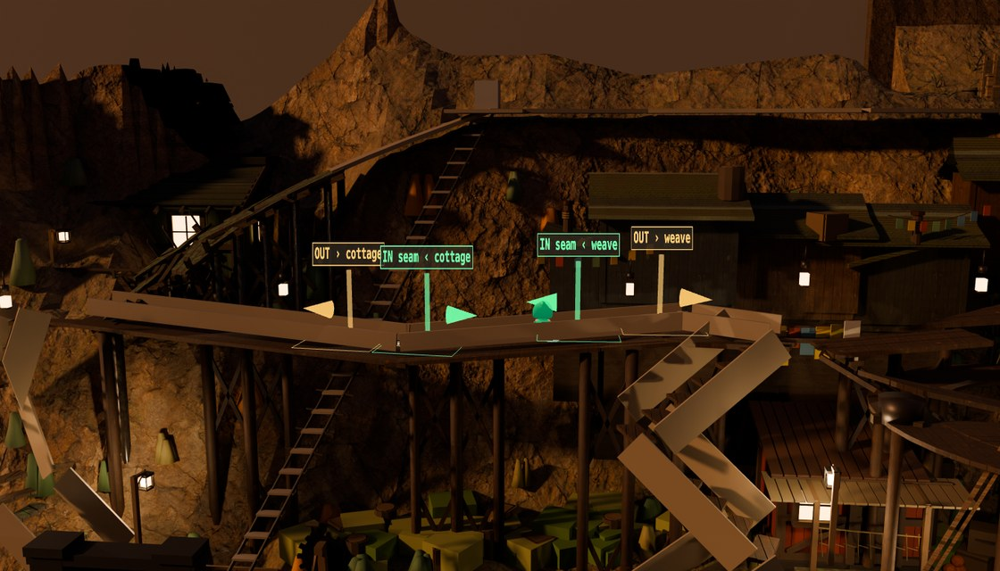
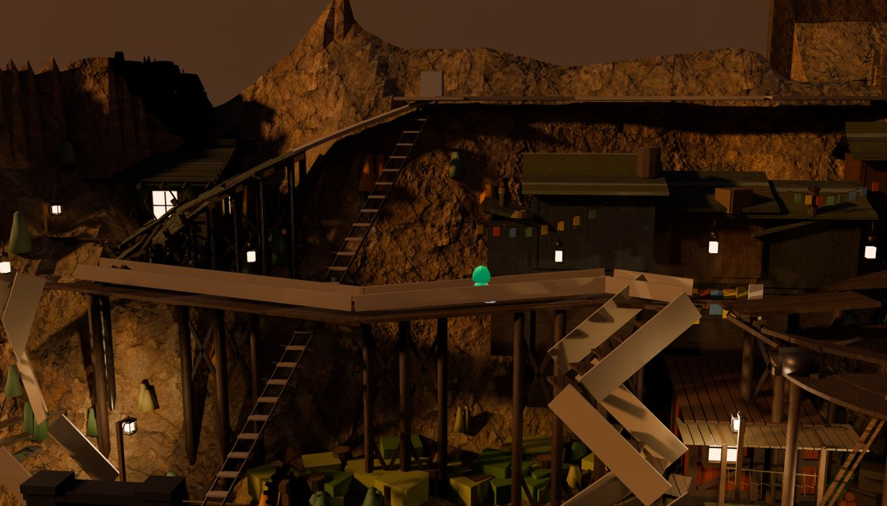
seam:weave-huts__keepers-cottage → weave (silent cut) · visible 100% · ndc (+0.32,-0.18) · edge margin +0.68seam:weave-huts__keepers-cottage → cottage (silent cut) · visible 100% · ndc (+0.32,-0.18) · edge margin +0.68seam:weave-huts__keepers-cottage ← weave · visible 100%seam:weave-huts__keepers-cottage ← cottage · visible 100%| route | role | class | len | surface vis | figure vis | worst hidden |
|---|---|---|---|---|---|---|
weave-huts__keepers-cottage@0.188..0.591 | vignette | bridge | 8.708 m | 0% | 100% | 10.45 m |
framing {"yaw": 96, "pitch": 10, "margin": 0.13} · visibleFrac 1 · route in frame 100% · raw record probe/crossing.json
What the shot is for (cameras.json): From the cliff shoulder out over the stilt clusters — the pilot cluster's plank yard, the huts stacked on their legs, drying decks strung with nets, the Westweave tucked in under the quay's shadow, and the gorge wall receding behind. The pilot slice's proven drama angle.
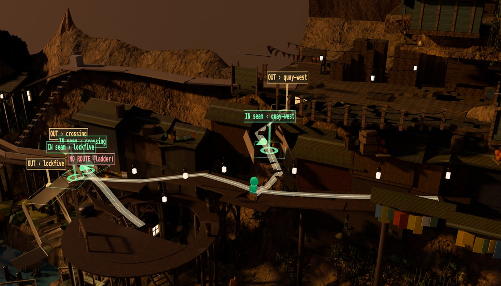
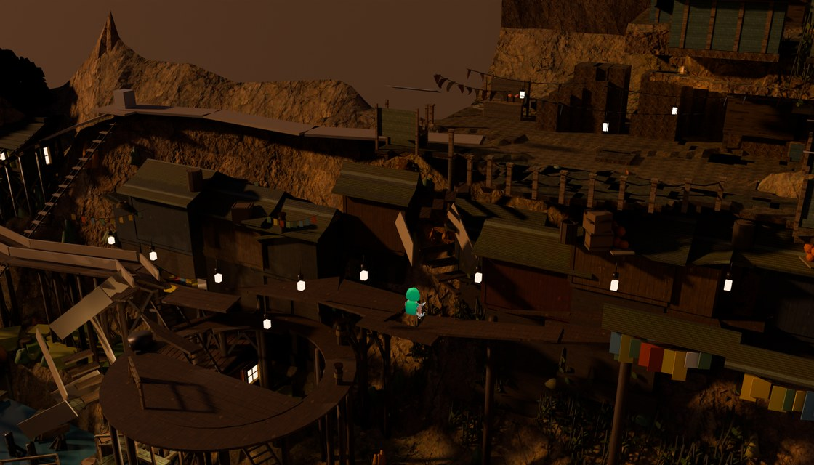
seam:quay-deck__pilot-cluster → quay-west (silent cut) · visible 64% · ndc (+0.14,+0.19) · edge margin +0.81seam:weave-huts__moorage → lockfive (silent cut) · visible 67% · ndc (-0.79,-0.37) · edge margin +0.21seam:weave-huts__keepers-cottage → crossing (silent cut) · visible 100% · ndc (-0.71,-0.16) · edge margin +0.29seam:quay-deck__pilot-cluster ← quay-west · visible 100%seam:weave-huts__moorage ← lockfive · visible 100%seam:weave-huts__keepers-cottage ← crossing · visible 100%| route | role | class | len | surface vis | figure vis | worst hidden |
|---|---|---|---|---|---|---|
quay-deck__pilot-cluster@0.483..1 | spine | stairs | 8.184 m | 100% | 100% | 0 m |
pilot-cluster__weave-huts | spine | deck | 13.185 m | 100% | 100% | 0 m |
weave-huts__moorage@0..0.273 | spine | stairs | 4.103 m | 50% | 100% | 2.74 m |
pilot-cluster__weave-north | link | deck | 11.196 m | 85.7% | 100% | 1.87 m |
weave-huts__drying-decks | link | deck | 6.617 m | 100% | 100% | 0 m |
weave-huts__keepers-cottage@0..0.188 | spine | bridge | 4.05 m | 100% | 100% | 0 m |
framing {"yaw": 118, "pitch": 22, "margin": 0.1} · visibleFrac 0.9688 · route in frame 100% · raw record probe/weave.json
What the shot is for (cameras.json): The town's hidden vertical: thirteen metres of switchback flight pinned to the cliff, shot side-on so the whole zig-zag reads at once — the head's shadowed mouth at the top, the boardwalk light at the foot. No landmarks by design.
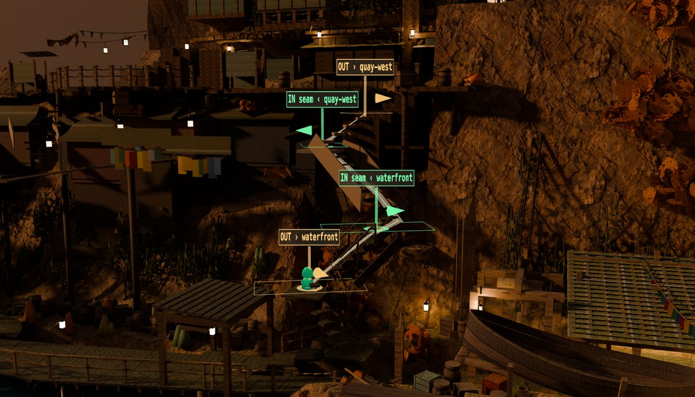
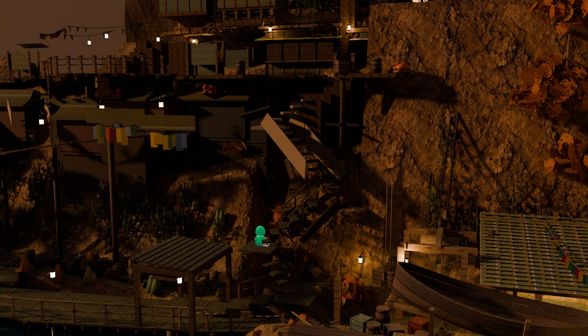
seam:deep-stairs-head__deep-stairs-foot → quay-west (silent cut) · visible 100% · ndc (+0.05,+0.40) · edge margin +0.60seam:deep-stairs-head__deep-stairs-foot → waterfront (silent cut) · visible 100% · ndc (+0.05,+0.40) · edge margin +0.60seam:deep-stairs-head__deep-stairs-foot ← quay-west · visible 100%seam:deep-stairs-head__deep-stairs-foot ← waterfront · visible 100%| route | role | class | len | surface vis | figure vis | worst hidden |
|---|---|---|---|---|---|---|
deep-stairs-head__deep-stairs-foot@0.146..0.637 | vignette | stairs | 14.266 m | 90.9% | 100% | 1.43 m |
framing {"yaw": 108, "pitch": 8, "margin": 0.13} · visibleFrac 0.9375 · route in frame 100% · raw record probe/deep-stairs.json
What the shot is for (cameras.json): The ACCEPTED Boatyard v10 hero shot, reproduced exactly: low along the slipway looking upstream, hauled hulls looming over the ways, the boatwright's shed and pitch kettle to the right, Lock Four closing the view. Explicit pos/aim — a human accepted this frame, so the solver does not get to move it.
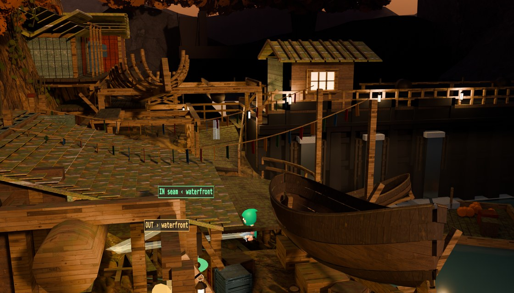
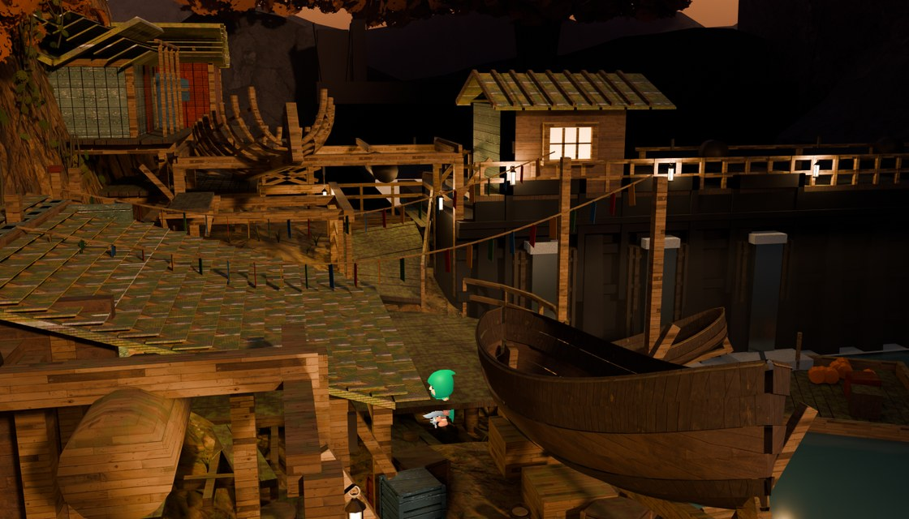
seam:winch-foot__slipway → waterfront (silent cut) · visible 51% · ndc (-0.34,-1.15) · edge margin -0.15 · GROUND OFF-FRAMEseam:winch-foot__slipway ← waterfront · visible 0%| route | role | class | len | surface vis | figure vis | worst hidden |
|---|---|---|---|---|---|---|
winch-foot__slipway@0.385..1 | link | deck | 6.881 m | 0% | 20% | 8.6 m |
slipway__drydock-frames | spur | deck | 5.722 m | 0% | 25% | 7.63 m |
slipway__boatwright-shed | link | deck | 6.152 m | 40% | 0% | 4.61 m |
boatwright-shed__pitch-kettle | spine | deck | 5.323 m | 75% | 25% | 1.77 m |
slipway__lockfour-overlook | spur | deck | 11.004 m | 37.5% | 62.5% | 7.86 m |
framing {"fov": 35} · visibleFrac 0.4844 · route in frame 100% · raw record probe/boatyard.json
What the shot is for (cameras.json): The boardwalk's upstream run under the cliff: the cargo winch platform and its dangling hook, the discreet mouth of the deep stairs vanishing up into shadow behind it, fish racks starting downstream. Water on the right the whole way.
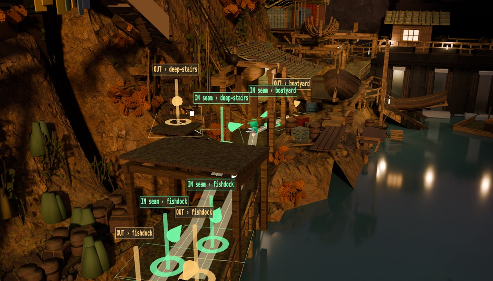
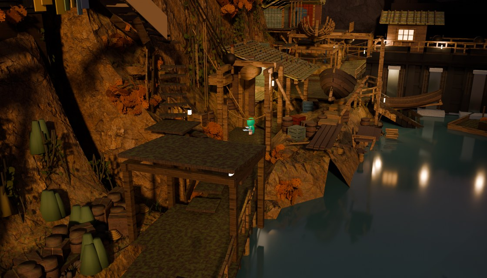
seam:fish-dock__winch-foot → fishdock (silent cut) · visible 100% · ndc (-0.20,-1.04) · edge margin -0.04 · GROUND OFF-FRAMEseam:deep-stairs-head__deep-stairs-foot → deep-stairs (silent cut) · visible 100% · ndc (-0.28,+0.10) · edge margin +0.72seam:deep-stairs-foot__fish-dock → fishdock (silent cut) · visible 0% · ndc (-0.43,-1.20) · edge margin -0.20 · GROUND OFF-FRAMEseam:winch-foot__slipway → boatyard (silent cut) · visible 14% · ndc (+0.18,+0.16) · edge margin +0.82seam:fish-dock__winch-foot ← fishdock · visible 100%seam:deep-stairs-head__deep-stairs-foot ← deep-stairs · visible 100%seam:deep-stairs-foot__fish-dock ← fishdock · visible 100%seam:winch-foot__slipway ← boatyard · visible 0%| route | role | class | len | surface vis | figure vis | worst hidden |
|---|---|---|---|---|---|---|
fish-dock__winch-foot@0.438..1 | spine | deck | 16.634 m | 60% | 80% | 7.39 m |
deep-stairs-head__deep-stairs-foot@0.637..1 | spine | stairs | 9.553 m | 57.1% | 71.4% | 4.78 m |
deep-stairs-foot__fish-dock@0..0.307 | spine | deck | 4.978 m | 75% | 100% | 1.66 m |
winch-foot__slipway@0..0.385 | spine | deck | 4.292 m | 75% | 100% | 1.43 m |
framing {"yaw": 20, "pitch": 18, "margin": 0.08} · visibleFrac 0.6 · route in frame 96% · raw record probe/waterfront.json
What the shot is for (cameras.json): Downstream along the same boardwalk: the fish dock's plank apron and drying racks filling frame, the Weave's stilt legs and its ladder coming down on the left, the shack and the moorage opening away east.
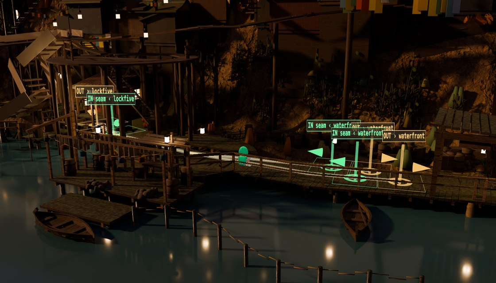
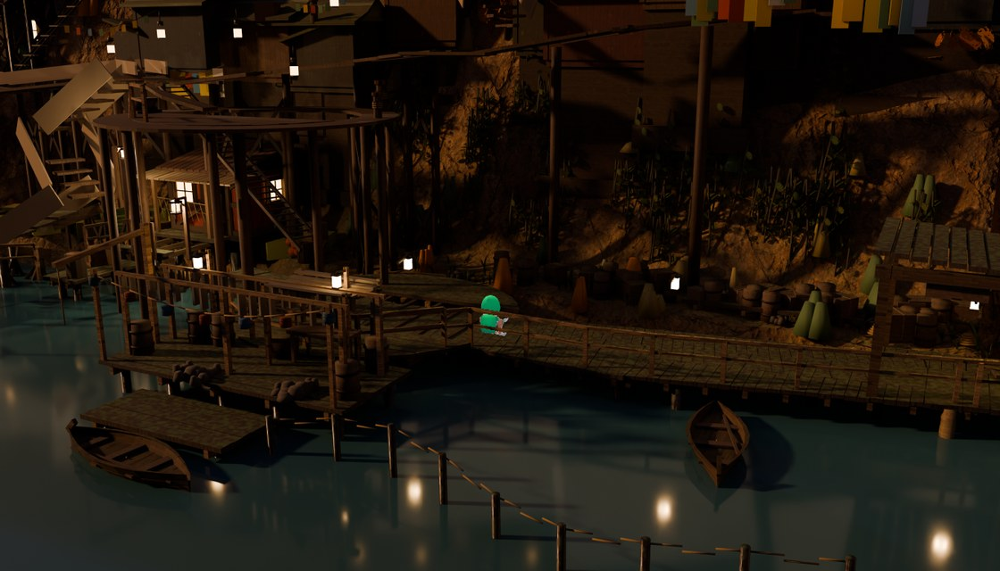
seam:tenant-shack__fish-dock → lockfive (silent cut) · visible 90% · ndc (-0.61,+0.09) · edge margin +0.39seam:fish-dock__winch-foot → waterfront (silent cut) · visible 90% · ndc (+0.61,-0.32) · edge margin +0.39seam:deep-stairs-foot__fish-dock → waterfront (silent cut) · visible 100% · ndc (+0.49,-0.23) · edge margin +0.51seam:tenant-shack__fish-dock ← lockfive · visible 72%seam:fish-dock__winch-foot ← waterfront · visible 89%seam:deep-stairs-foot__fish-dock ← waterfront · visible 100%| route | role | class | len | surface vis | figure vis | worst hidden |
|---|---|---|---|---|---|---|
tenant-shack__fish-dock@0.215..1 | link | deck | 8.724 m | 57.1% | 100% | 4.36 m |
fish-dock__winch-foot@0..0.438 | link | deck | 12.969 m | 88.9% | 100% | 1.62 m |
deep-stairs-foot__fish-dock@0.307..1 | link | deck | 11.236 m | 85.7% | 100% | 1.87 m |
framing {"yaw": 116, "pitch": 15, "margin": 0.08} · visibleFrac 0.84 · route in frame 100% · raw record probe/fishdock.json
What the shot is for (cameras.json): The last descent: the cottage's own stair dropping eight metres off the spur to the basin floor, shot from out over the water so the flight reads against the cliff with the cottage balcony above it and the lock gates below. No landmarks by design.
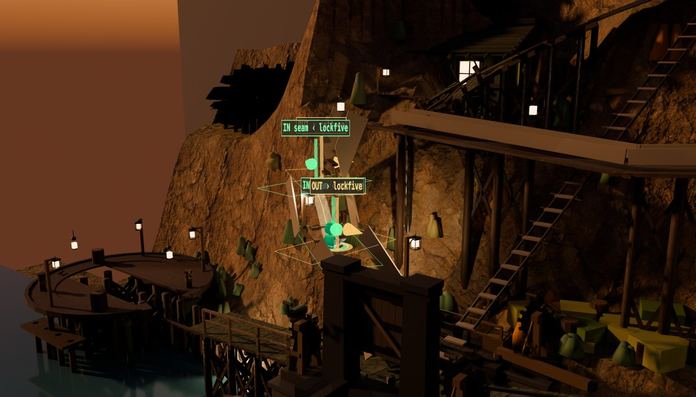
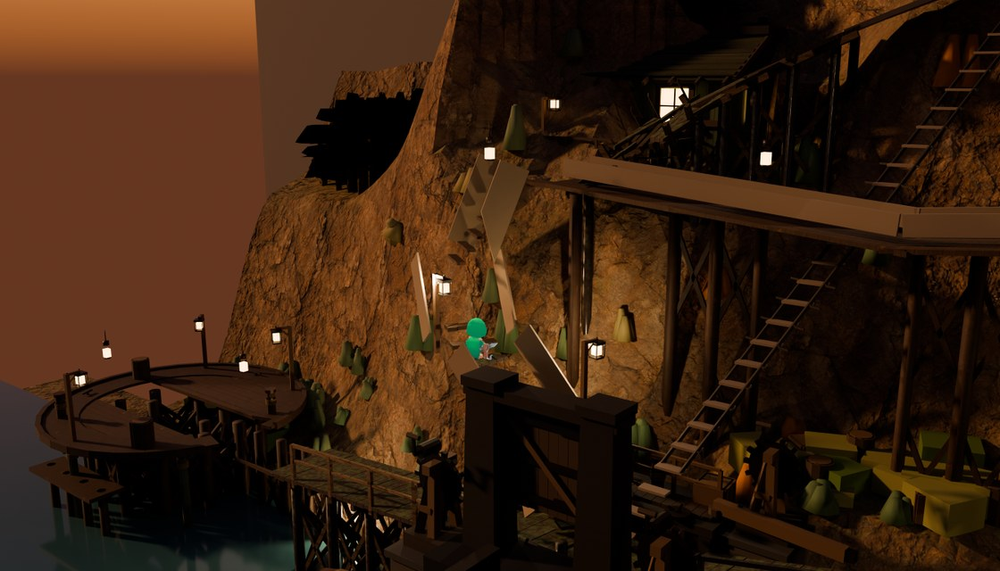
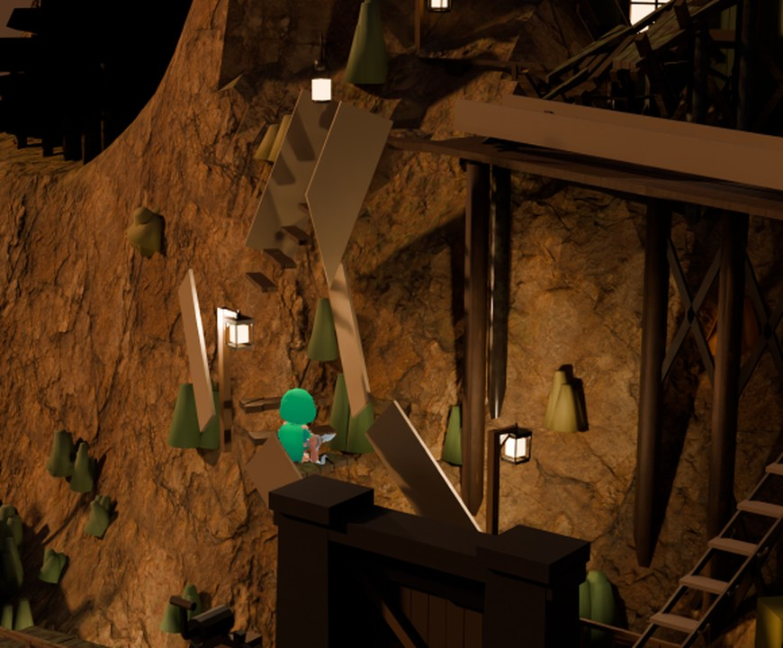
seam:keepers-cottage__lock-five → cottage (silent cut) · visible 100% · ndc (-0.07,+0.06) · edge margin +0.93seam:keepers-cottage__lock-five → lockfive (silent cut) · visible 100% · ndc (-0.07,+0.06) · edge margin +0.93seam:keepers-cottage__lock-five ← cottage · visible 100%seam:keepers-cottage__lock-five ← lockfive · visible 100%| route | role | class | len | surface vis | figure vis | worst hidden |
|---|---|---|---|---|---|---|
keepers-cottage__lock-five@0.239..0.5 | vignette | stairs | 3.938 m | 100% | 100% | 0 m |
framing {"yaw": 128, "pitch": 13, "margin": 0.12} · visibleFrac 0.7344 · route in frame 100% · raw record probe/cottage-steps.json
What the shot is for (cameras.json): The water-level centrepiece, low in the gorge looking downstream: the black dam and its three wheels ahead, the lock gates, the tar-dark boat at its moorage, the tenant's shack on the near bank, and the cottage lantern-lit on the wall above — the 'house over the locks' sightline.
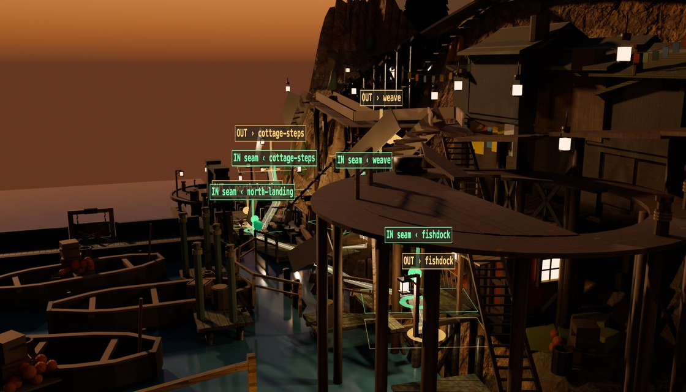
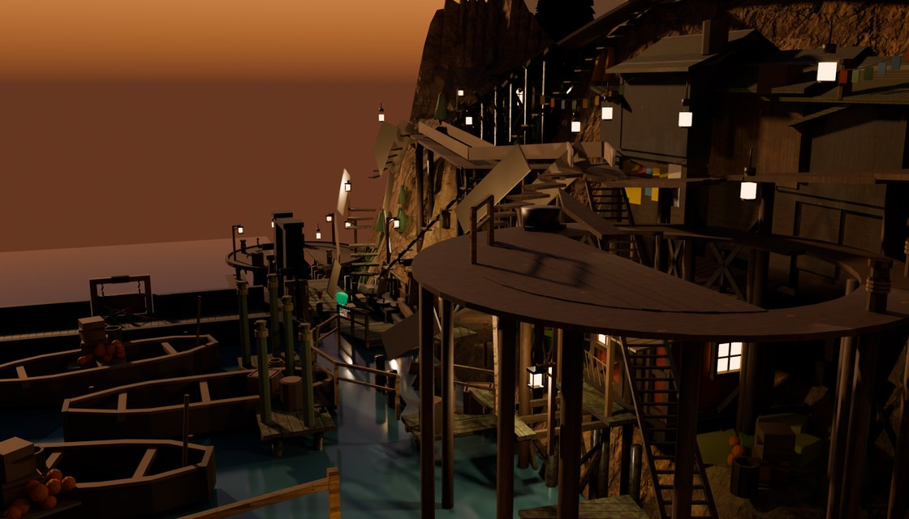
seam:weave-huts__moorage → weave (silent cut) · visible 0% · ndc (+0.11,+0.17) · edge margin +0.83seam:tenant-shack__fish-dock → fishdock (silent cut) · visible 17% · ndc (+0.24,-0.75) · edge margin +0.25seam:keepers-cottage__lock-five → cottage-steps (silent cut) · visible 100% · ndc (-0.21,+0.11) · edge margin +0.79seam:lock-five__north-landing → north-landing (silent cut) · visible 46% · ndc (-0.28,-0.17) · edge margin +0.72seam:weave-huts__moorage ← weave · visible 0%seam:tenant-shack__fish-dock ← fishdock · visible 36%seam:keepers-cottage__lock-five ← cottage-steps · visible 100%seam:lock-five__north-landing ← north-landing · visible 100%| route | role | class | len | surface vis | figure vis | worst hidden |
|---|---|---|---|---|---|---|
weave-huts__moorage@0.273..1 | link | stairs | 11.276 m | 44.4% | 11.1% | 4.23 m |
moorage__tenant-shack | link | deck | 6.34 m | 100% | 80% | 0 m |
moorage__lock-five | link | deck | 10.93 m | 71.4% | 71.4% | 3.64 m |
tenant-shack__fish-dock@0..0.215 | spine | deck | 2.402 m | 66.7% | 66.7% | 1.2 m |
keepers-cottage__lock-five@0.5..1 | spine | stairs | 6.584 m | 100% | 100% | 0 m |
lock-five__north-landing@0..0.202 | spine | deck | 3.804 m | 100% | 100% | 0 m |
framing {"yaw": 160, "pitch": 12, "margin": 0.08, "maxDist": 50} · visibleFrac 0.5156 · route in frame 100% · raw record probe/lockfive.json
What the shot is for (cameras.json): The last pier and the goodbye shot: from out on the water looking back upstream, the dam's black mass and wheels behind, the whole town stacked up the cliff above it. The night-departure stage.
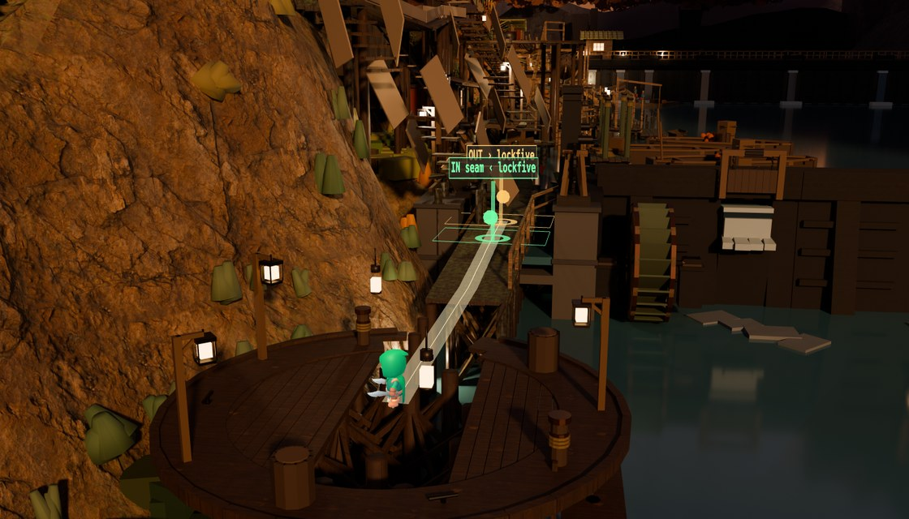
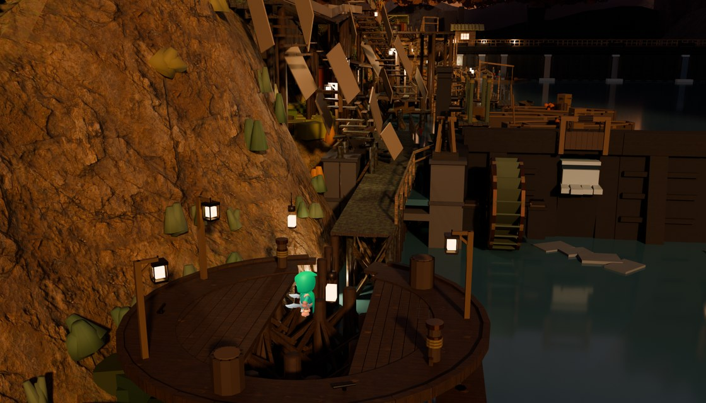
seam:lock-five__north-landing → lockfive (silent cut) · visible 100% · ndc (+0.10,+0.12) · edge margin +0.88seam:lock-five__north-landing ← lockfive · visible 100%| route | role | class | len | surface vis | figure vis | worst hidden |
|---|---|---|---|---|---|---|
lock-five__north-landing@0.202..1 | link | deck | 14.995 m | 100% | 100% | 0 m |
framing {"yaw": 8, "pitch": 14, "margin": 0.11} · visibleFrac 0.9667 · route in frame 100% · raw record probe/north-landing.json